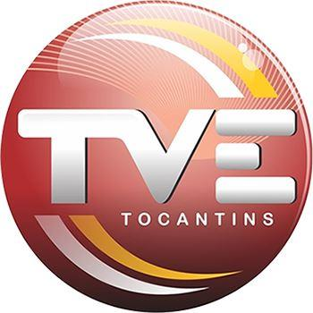
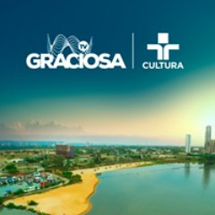

Portfólio
Apresento-lhes alguns de meus melhores trabalhos
Sobre mim
Linha do tempo
-

2014-2016
Redesat - TVE Tocantins
Responsável pela edição de matérias jornalísticas até o final do primeiro semestre de 2014. Destinado para edição e finalização do Programa Vitrine do Campo exibido em rede nacional.
-

Junho 2016
Serviço Nacional de Aprendizagem Rural
Estágio em TI realizando apoio na manutenção de computadores, suporte aos usuários, inserção de dados em sistema específico da instituição.
-

2017
TV Graciosa
Encarregado da produção, edição e finalização de “VTs” e programas comerciais e promocionais, para veiculação na emissora TV Graciosa.
-
2018-2020
Tribunal Regional Eleitoral do Tocantins
Estágio em TI com apoio no suporte ao usuário nível I e II, configuração e manutenção de equipamentos, realizando Helpdesk em TI aos usuários da instituição. Depois fui para a Seção de Gestão de Infraestrutura Tecnológica do TRE-TO para tabalhar com gerenciamento de usuários, criação de máquinas virtuais servidores linux, backup em banco de dados entre outras tarefas de Infraestrutura Tecnologica.
-
Atualmente
Desenvolvendo
Projetos